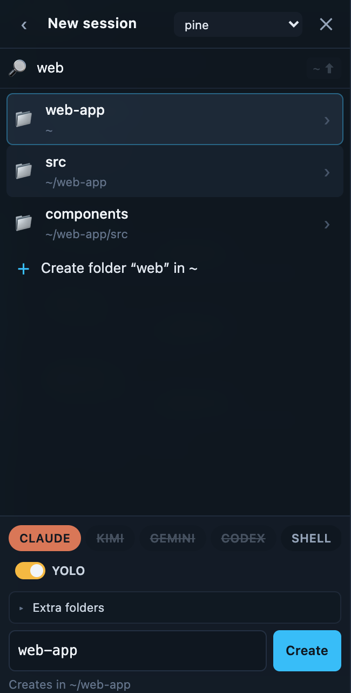
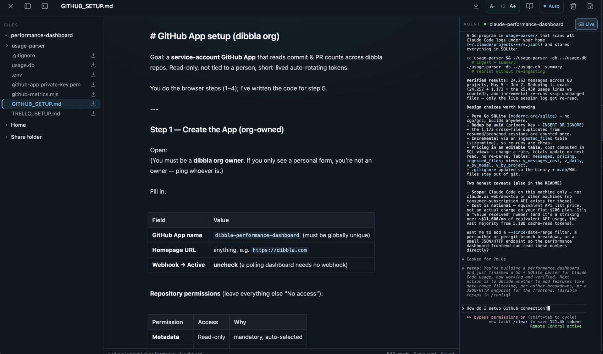
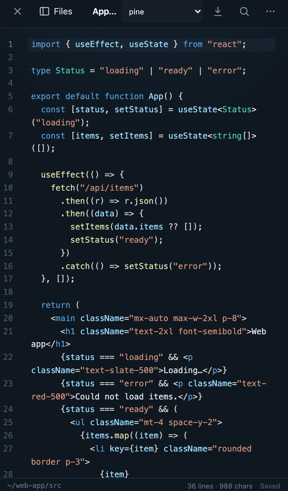

Using the web app
Everything at app.ccscreen.dev works in any browser, phone or desktop. On a phone, use Add to Home Screen — cc-screen is a PWA, so you get a real app icon, full-screen terminals, and push notifications.
Sessions and the switcher
The session drawer lists every session on every connected machine, grouped by machine, with a live preview line so you can tell at a glance who's working and who's waiting for you. Tap a session to attach; the terminal is the real PTY — what you see is exactly what's running on the box, and it keeps running when you close the tab.
New session starts one: pick the machine, the tool (Claude, Codex, Gemini, Kimi, or a plain shell), and the working directory (with a directory search, so deep project paths are a few keystrokes). Two details worth knowing:

- Skip permissions (on by default) launches the CLI with its approval-bypass flag — the agent won't stop to ask before running tools. Turn it off for a session you want to supervise; sessions with it off wear a "safe" badge.
- Sessions survive you. Closing the browser, losing signal, even the machine rebooting — the agent resumes its sessions and your panes re-attach.
The grid (desktop)
On a wide screen you can tile up to six sessions side by side, in six layout templates (columns, rows, main-plus-stack, 2×2, and more). Panes can come from different machines — one grid, your whole fleet. There's a layout palette to switch arrangements, and each pane is a full live terminal.
Files: browse, edit, cowork
Every machine gets a built-in file browser and editor, confined to that machine's home directory. The tree is live (it follows filesystem changes as your agent works), and the editor previews markdown — handy for reading the plan or review docs agents produce.


- Uploads: drop files (up to 500 MiB) onto a machine from the browser.
- Clipboard images: paste an image (Ctrl-V) straight into a Claude session — cc-screen stages it on the machine so the CLI can read it, as if you'd pasted locally.
- Downloads: pull any file back out, PDFs render in-app.
Notifications
Enable notifications (the bell button) and your phone buzzes when an agent finishes its turn — the moment it stops working and waits for your input. One subscription covers every machine; the machine's name is in the title. On iOS this requires the PWA installed to the home screen.
Sharing
Share a whole machine (from its dashboard row) or a single session (from its menu) with another person, as can view or can use:
- If they already have an account, the share lands in their inbox (the bell icon) to accept or decline.
- If they don't, you get an invite link to send them — the share attaches automatically when they sign up with that email.
You can see everything shared by you and with you on the dashboard's Sharing card, and revoke (or leave) any of it there. Access stops immediately on revoke.
The dashboard
The machines dashboard (your account page) is the admin surface:
- online/offline per machine, live.
- ⚠ N missing · Install — the machine lacks some coding assistants; installs them remotely, for that machine's user, no sudo.
- Update — update a machine's assistants, then restart their sessions.
- Share — invite someone to the machine.
- Rotate — mint a new machine credential (the old one stops working; shown once).
- Unlink — detach the machine from your account; it would need to re-enroll to come back.
- Add a machine — generates the install one-liner for macOS/Linux or Windows. See the Quickstart.
If you hit your plan's machine or session limit, the app tells you which cap you hit and how to request more — see the FAQ on plans.